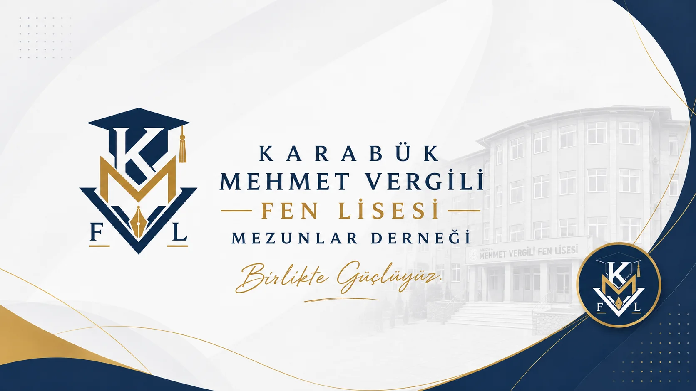

Mezun Ağı
Mezunlarımız arasında güvenilir, erişilebilir ve sürdürülebilir bağlar kurmak.

Üyelik başvurunuzu e-Devlet üzerinden yapabilirsiniz.
e-Devlet Üzerinden Üye OlNeden varız?
Okulumuzun mezunlarını birbirine, kurumlarına ve yaşadıkları şehre kalıcı biçimde bağlamak; bu bağı hem mezunların profesyonel ve sosyal hayatını güçlendiren hem de okulumuzun bugününe ve geleceğine somut katkı sunan bir değer zincirine dönüştürmek.
Mezunlarımız arasında güvenilir, erişilebilir ve sürdürülebilir bağlar kurmak.
Öğrencilerimize mentorluk, kariyer ve eğitim desteği sağlamak.
Kararlarımızı liyakat, hesap verebilirlik ve uzun vadeli fayda temelinde almak.
Kuruluş ekibi
Geçici Yönetim Kurulu Başkanı
Geçici Başkan Yardımcısı
Geçici Sekreter
Geçici Sayman
Kurucu Üye
Güncel gelişmeler
Duyurular yükleniyor…